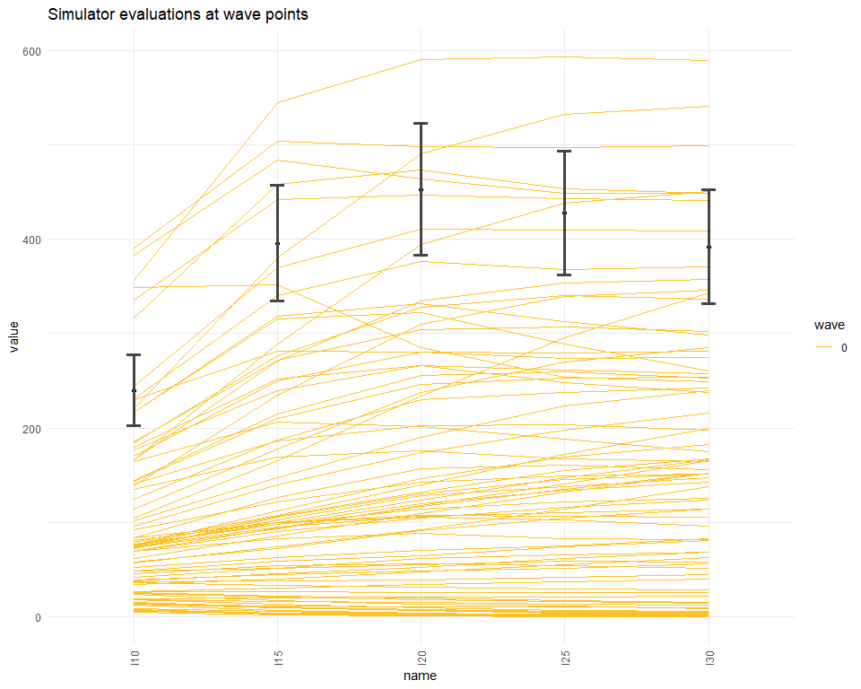
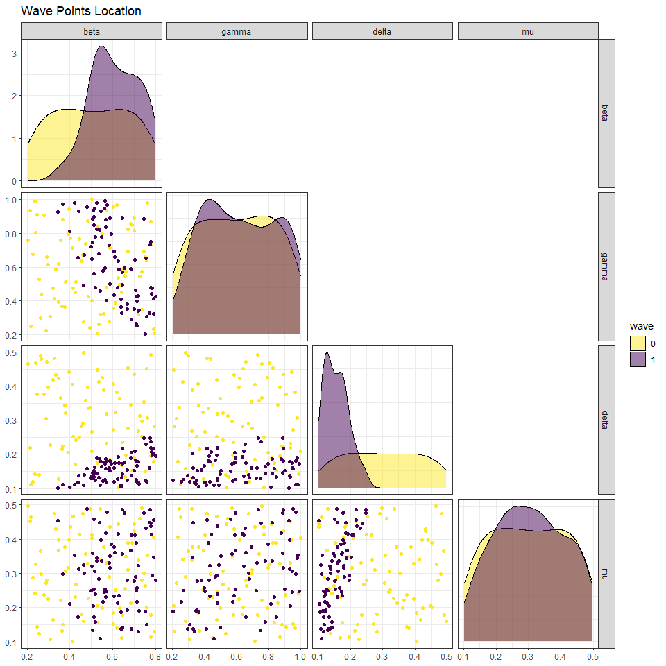

2 Perfoming a full wave of emulation and history matching
In this section we show a simple and direct way of performing a full wave of emulation and history matching (the first wave). This is done by using the function
full_wave, which needs the following information:
A dataset that will be split by the function into training data and test data;
A list of ranges for the parameters;
The targets: for each of the model outputs to emulate, we need a pair (val, sigma) that we will use to evaluate implausibility. The ‘val’ component represents the mean value of the output and ‘sigma’ represents our uncertainty about it: a pair (val,sigma) corresponds to the acceptable interval (val - 3* sigma, val + 3*sigma);
We already have almost all of these pieces. We only need to define the targets:
targets = list(
I10 = list(val = 240, sigma = 12.64),
I15 = list(val = 396, sigma = 20.49),
I20 = list(val = 453, sigma = 23.24),
I25 = list(val = 428, sigma = 21.99),
I30 = list(val = 392, sigma = 20.15)
)Before performing a full wave of history matching with emulation we use the simulator_plot function to plot runs from parameter sets in wave0 and compare them to our targets. Note the in graph titles we will refer to parameter sets in a given wave as “wave points” for the sake of shortness.

We then perform the first wave of history matching through the function full_wave:
The full_wave function does the following for us:
takes all the data (
wave0[,1:9]) and splits it into a training set and a validation set. The default proportion of data used to train the emulators is 70%;creates initial emulators: these are a preliminary version of the emulators necessary to set our priors for the Bayes Linear method;
creates the
emulators: these are obtained by adjusting the base emulators through the Bayes Linear update formulae;provides us with
points, the new sample parameter sets where the model will be run to build the next wave emulators.
To see how the parameter space has changed after the first wave of the process, we use the function wave_points, which plots the old and the new set of parameters on the same pair of axis:

Here wave0 parameter sets are in yellow and the new sets are in purple. The plots in the main diagonal show the distribution of points in the two sets. In each plot the parameters that are not shown are fixed at the mid-range value. Let us take a look at the yellow and purple distributions for the delta parameter. While the distribution of points in wave0 is rather uniform, the distribution of the new wave peaks at low values of delta and decreases to zero for large values of delta. Similarly, if we look at the beta-gamma plot, the yellow points are uniformly distributed, while the purple points are concentrated in the upper right region: this suggests that parameter sets with low values of beta and low values of mu are unlikely to give a good fit for the model.
The next plot shows that parameter sets in points (in orange) perform considerably better than parameter sets in wave0 (in yellow). To create the plot we bind the parameter sets in points with the relative model runs, that we obtain through the getOutputs function.
next_wave <- getOutputs(test_full_wave$points, seq(10,30,by=5))
wave1 <- data.frame(cbind(test_full_wave$points,next_wave))%>%
setNames(c(names(ranges),paste0("I",seq(10,30,by=5)), paste0("EV",seq(10,30,by=5))))
all_points <- list(wave0[,1:9], wave1[,1:9])
simulator_plot(all_points, targets, palette=c("goldenrod1", "red")) In order to perform the second wave of the process, we can use
In order to perform the second wave of the process, we can use full_wave again, this time passing it the runs in wave1, the ranges and targets as before, and the emulators trained in wave one old_emulators = test_full_wave$emulators. In general, at wave \(k\), all emulators trained in earlier waves should be passed to the full_wave function.
We can compare the new non-implausible points with the previous ones:
In the following sections we will explain step by step what full_wave does behind the scenes. This will not only enhance the reader’s overall understanding, but will also provide them with the necessary tools to have more control over the process and customise it through their judgement.